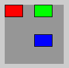
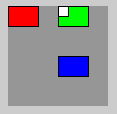
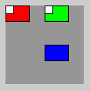

Jetzt lernen wir, wie wir bei all den Transformationen einen "Zwischenzustand" speichern und später wiederherstellen können.
Transformationen werden mithilfe von Matrizen beschrieben bzw. berechnet. Bei einer Matrix handelt es sich um eine rechteckige Anordnung von Zahlen. Wir können uns zu jedem Zeitpunkt die aktuelle Matrix unseres Zeichenfensters mit dem Befehl printMatrix() in der Konsole ausgeben lassen. Wenn wir noch keine Transformation durchgeführt haben, gibt Processing folgendes aus:
1,0000 0,0000 0,0000
0,0000 1,0000 0,0000Das ist der "Grundzustand" unseres Koorinatenfensters. Wenn wir jetzt Transformationen durchführen, werden sich diese Werte ändern:
- Wenn du gar keine Transformationen ausführst, ist diese Matrix die Identität(-smatrix). Wir nennen diese Matrix M0 und unser Ausgangs-Koordinatensystem nennen wir System 0.
- M ist jetzt M0.
- Wenn du z.B. eine Translation um (50, 0) durchführst, dann nennen wir die entsprechende Matrix M1.
- Jetzt wird M zu M0 * M1 (das ist wieder M1, da M0 die Identität ist).
- Wenn du z.B. eine zweite Translation, z.B. um (0, 50) durchführst, dann nennen wir diese Matrix M2.
- M wird zu M0 * M1 * M2.
// Hier werden drei Koordinatensysteme gezeigt
// System 0: Ausgangssystem (rotes Rechteck)
// System 1: um 50px nach rechts verschoben (grünes Rechteck)
// System 2: um 50px nach rechts, 50px nach unten verschoben (blaues R.)
background(150);
printMatrix(); // Matrix M = M0 (Identität)
fill(255,0,0);
rect(0,0,30,20); // rotes Rechteck
translate(50,0); // Matrix M1
printMatrix(); // Matrix M = M0 * M1 (System 1)
fill(0,255,0);
rect(0,0,30,20); // grünes Rechteck
translate(0,50); // Matrix M2
printMatrix(); // Matrix M = M0 * M1 * M2 (System 2)
fill(0,0,255);
rect(0,0,30,20); // blaues Rechteck
Auf der Konsole sieht man die Matrix M zu den drei Zeitpunkten (Ausgangssystem, nach erster Translation, nach zweiter Translation):
1,0000 0,0000 0,0000
0,0000 1,0000 0,0000
01,0000 00,0000 50,0000
00,0000 01,0000 00,0000
01,0000 00,0000 50,0000
00,0000 01,0000 50,0000Die Rechtecke sind jeweils am Ursprung von System 0 (rot), System 1 (grün) und System 2 (blau).

Jetzt wollen wir am Ende des Codes wieder etwas in System 1 (grün) zeichnen, z.B. ein weißes Quadrat. Wie kannst du das tun, wenn es unbedingt am Ende des Codes sein muss? Ganz einfach: Du speicherst die Matrix M, nachdem du die erste Translation ausgeführt hast. Das geht mit pushMatrix(). Wenn du diese Matrix später wieder benötigst, rufst du popMatrix() auf und schon bist du in System 1.
background(150);
// Matrix M0 (Identität)
fill(255,0,0);
rect(0,0,30,20); // rotes Rechteck
translate(50,0); // Matrix M1 (System 1)
pushMatrix(); // System 1 speichern
fill(0,255,0);
rect(0,0,30,20); // grünes Rechteck
translate(0,50); // Matrix M2 (System 2)
fill(0,0,255);
rect(0,0,30,20); // blaues Rechteck
popMatrix(); // System 1 zurückholen
printMatrix();
fill(255);
rect(0,0,10,10); // NEU: weißes QuadratDas weiße Quadrat wird in System 1 (grün) gezeichnet:

Auf der Konsole siehst du die Matrix nach dem popMatrix(): Es ist die Matrix von System 1 (vgl. mit Konsolenoutput oben).
01,0000 00,0000 50,0000
00,0000 01,0000 00,0000Achtung: Du musst in jedem Fall erst pushMatrix() ausführen bevor du popMatrix() ausführen kannst. Du musst also erstmal was speichern, bevor du etwas löschen kannst - sonst bekommst du eine RuntimeException und dein Programm hängt sich auf!
Stack
Die Befehle pushMatrix und popMatrix haben diese seltsamen Namen nicht ohne Grund. Dahinter verbirgt sich ein wichtiges Speichermodell der Informatik: der Stack (deutsch. Stapel). Ein Stack ist ein Speicher, der so funktioniert wie ein Stapel Bücher: Es kann immer nur etwas oben drauf gelegt werden und es kann immer nur von oben weggenommen werden. Das bedeutet ich kann immer nur das "Buch" herausholen, das ich zuletzt hineingelegt habe und somit ganz oben liegt. Dieses Prinzip nennt man auch "Last in - First out", abgekürzt: LiFo.
Nehmen wir an, du kaufst Buch A. Dann legst du es auf einen leeren Stapel. Es liegt ganz "oben". Dein Stapel sieht wie folgt aus:
A <-- oben
Man sagt auch, du pushst A auf den Stapel. Du kaufst jetzt Buch B und speicherst es. Dein Stapel ist gewachsen. Jetzt liegt B oben:
B <-- oben
A
Beachte, dass du derzeit nicht an Buch A herankommst! Jetzt bekommst du ein drittes Buch C:
C <-- oben
B
A
Wenn du Buch C lesen willst, dann holst du es vom Stapel. Man nennt diesen Vorgang auch pop. Dein neuer Stapel ist also:
B <-- oben
A
Du möchtest Buch A lesen? Dann musst du erst Buch B holen:
A <-- oben
Erst jetzt darfst du ein weiteres Mal pop ausführen und hast A. Dein Stapel ist dann leer.
Der Matrix-Stapel
Die Befehle pushMatrix und popMatrix machen nichts anderes, als die aktuelle Matrix M auf einen Stapel zu legen und wieder zu holen. Dadurch ist es möglich, mehrere Matrizen zu speichern.
Nehmen wir an, du willst im obigen Beispiel auch ein weißes Quadrat in System 0 zeichnen, und zwar auch am Ende des Codes. Wie machst du das?
Antwort: Du nutzt den Matrix-Stapel. Du speicherst die Matrix M ganz am Anfang auf dem Stapel (mit pushMatrix):
M (System 0) <-- oben
Dann speicherst du die Matrix M nach der ersten Translation (wieder pushMatrix):
M (System 1) <-- oben
M (System 0)
Wenn du wie im alten Code popMatrix aufrufst, wird System 1 wiederhergestellt und der Stapel sieht so aus:
M (System 0) <-- oben
Das heißt, ganz zum Schluss machenst ein weiteres popMatrix(), um System 0 wiederherzustellen. Jetzt kannst du erneut ein weißes Quadrat zeichnen und der Matrix-Stapel ist leer.
background(150);
// Matrix M0 (Identität)
pushMatrix(); // System 0 speichern
fill(255,0,0);
rect(0,0,30,20); // rotes Rechteck
translate(50,0); // Matrix M1 (System 1)
pushMatrix(); // System 1 speichern
fill(0,255,0);
rect(0,0,30,20); // grünes Rechteck
translate(0,50); // Matrix M2 (System 2)
fill(0,0,255);
rect(0,0,30,20); // blaues Rechteck
popMatrix(); // System 1 zurückholen
fill(255);
rect(0,0,10,10); // weißes Quadrat
popMatrix(); // System 0 zurückholen (wieder Ausgangssystem)
printMatrix();
fill(255);
rect(0,0,10,10); // weißes QuadratDas weiße Quadrat wird jetzt auch in System 0 (rot) gezeichnet:

Zusammenfassung
- Der aktuelle Zustand des Koordinatensystems kann in Form einer Matrix ausgegeben werden.
- Diese Matrix besteht aus 2x3 Zahlen.
- Sobald eine Tranformation (Translation, Skalierung, Rotation) ausgeführt wird, ändern sich die Werte in der Matrix.
- Ich kann mir die aktuelle Matrix mit printMatrix() ausgeben lassen.
- Mtihilfe von
pushMatrix()undpopMatrix()können Transformationen gespeichert oder gelöscht werden. - Die Matrizen werden in diesem Fall auf einem Stack gespeichert. Das ist eine Speichermodell, welches nach dem Prinzip "Last in - first out" funktioniert. Das bedeutet, wenn du eine Matrix löschst, dann löschst du die Matrix, die zuletzt gespeichert wurde.